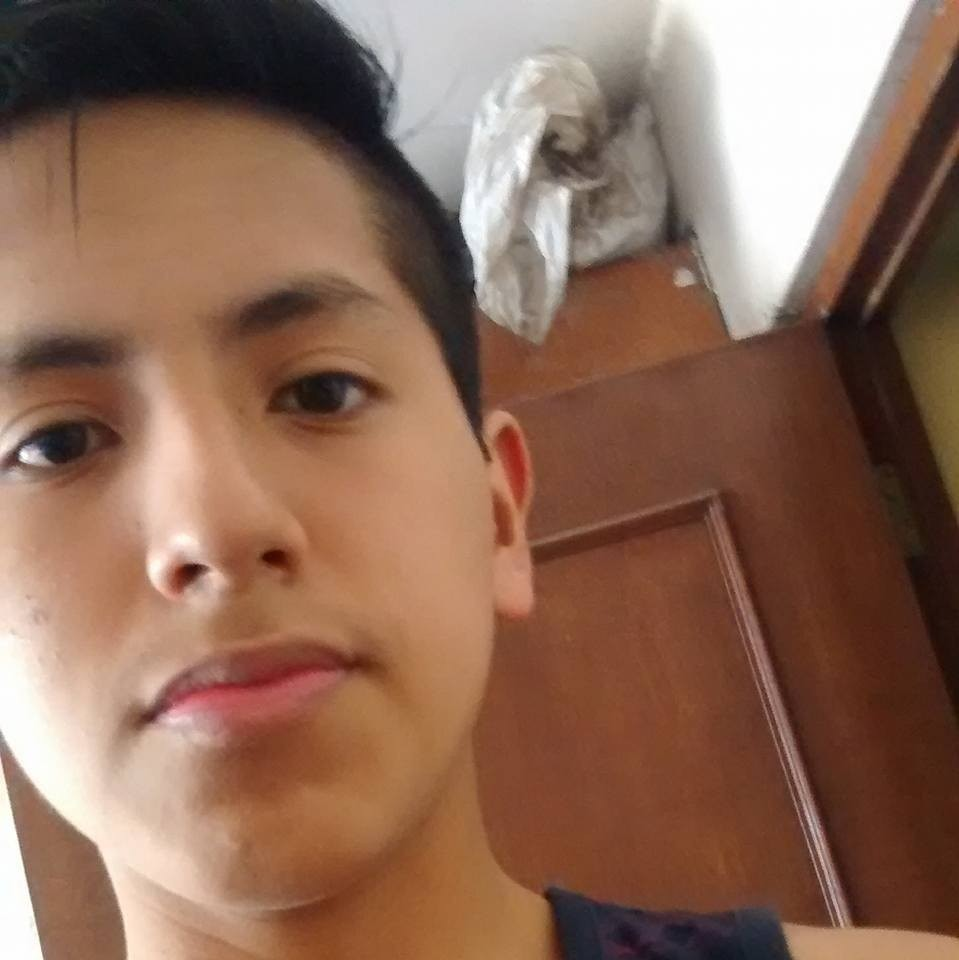
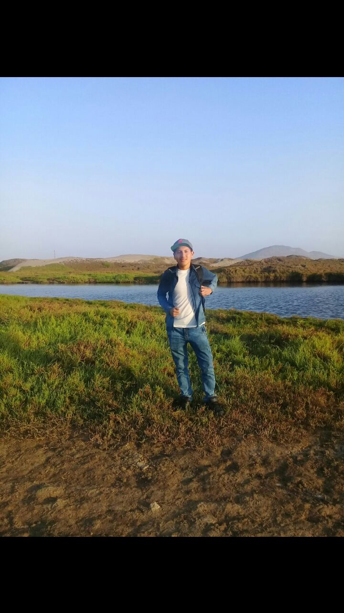
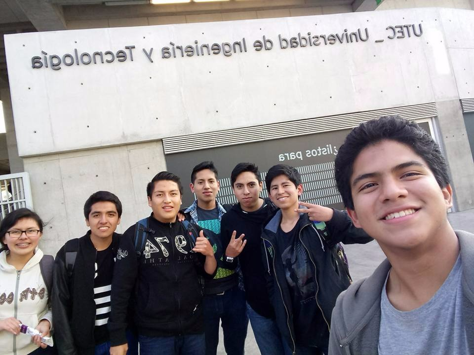

FABRIZZIO JOSUE VILLAR ACEVEDO
|  | Hooola! Soy Fabrizzio Josue Villar Acevedo, soy de Chosica, Lima. Tengo 17 años y actualmente estoy viviendo en Barranco. Estudio en la Universidad de Ingeniería y Tecnología; y me apasiona las ciencias y el arte, considero que es una universidad rigurosa que impulsa la independencia y el empredimiento del alumno; Donde el profesor no solo es la persona que enseña sino es el guía en tu autoaprendizaje. |
|
Soy un joven que estudia actualmente en la UTEC Ingeniería Ambiental, debido que me interesa desarrollar soluciones innovadoras frente a los problemas de contaminación ambiental que presenta nuestro país. En mis tiempos libres juego videojuegos y estudio Física y Química. Considero que mi estadía como cachimbo ha sido muy acogedora en la universidad y me proyecto muchos retos cuando culmine mis estudios superiores. |
 | |
|  | Me gusta jugar videojuegos, ver animes y escuchar Batallas de Gallos (rap), de esta forma me desestreso y me relajo. Mis experiencias ya al culminar mi primer semestre en la universidad, me hicieron reflexionar sobre mis nuevas metas y el propósito de porqué estudiar Ingeniería Ambiental. |
|